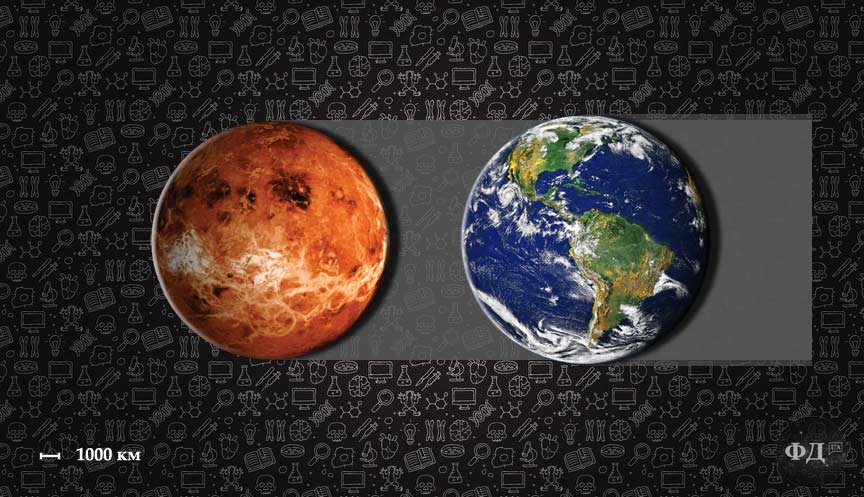
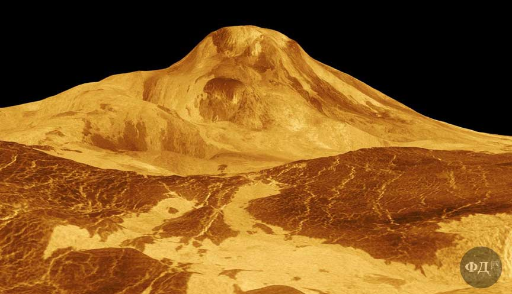

Венера богиня кохання, якій поклонялись стародавні римляни, а також планета, яку практично щоночі дуже добре видно на зоряному небі. Хоч планету Венеру вважають близнюком Землі, оскільки вона найбільш схожа за розмірами та масою планета, не варто забувати, що на Венері надзвичайно агресивна для людини атмосфера, жахливі кислотні дощі, надвисока температура, постійні виверження вулканів та панують надпотужні вітри.

1. Венера не єдина планета в космосі, яку назвали на честь римського божества, як ми вже згадували Внера була богинею любові і краси в Давньому Римі, однак це єдина планета, яка була названа на честь богині (жінки), а не бога (чоловіка). 2. За підрахунками вчених діаметр Венери становить 12104 км. Це всього лиш на 638 км менше діаметру Землі. 3. В атмосфері Венери переважає вуглекислий газ (близько 96,5%), і його висока концентрація зумовлює парниковий ефект. Сонце розжарює поверхню Венери до середньої температури 462°C. 4. На Венері дуже слабке магнітне поле, воно не перевищує 5-10 % магнітного поля Землі і тому вона зовсім не захищена від бомбардування зарядженими частинками. Через відсутність магнітного поля Венера втратила всю воду, яка дісталась їй на ранніх етапах формуванні планети. 5. Якби атмосфера та магнітне поле на Венері були такі, як на Землі, то середня температура на планеті становила б 26-27 °C (на Землі 15 °C).
Чому Венера гарячіша за Меркурій
6. Атмосфера на планеті значно щільніша, атмосферний тиск в понад 90 разів вищий ніж на Землі. Через високий тиск на поверхні Венери формуються дуже щільні хмари, які в свою чергу створюють грози та блискавки в тисячі раз потужніші ніж на Землі. 7. Хоч ми можемо спостерігати цю красиву та незвичну планету навіть неозброєним оком, з Венери не видно Землю і навіть Сонце. Її небо постійно вкрите отруйними хмарами, з яких на поверхню планети випадає дощ з сірчаної кислоти. 8. Завдяки радіолокаційним зображенням вдалось встановити, що на поверхні Венери більше вулканів, ніж на будь-якій іншій планеті в Сонячній системі — понад 1650. Через це у ландшафті Венери переважають гори та скелясті рівнини з застиглої лави. 9. Оскільки на Венері немає ні морів ні океанів вчені починають відлік висоти від середнього рівня над поверхнею планети. Найвищою гірською системою на Венері є Гори Максвелла, які утворились внаслідок тектонічної активності на планеті. Сьогодні не відомо, яка з вершин гірської системи найвища оскільки різниця їх висот незначна і дані радіолокаційного дослідження мають певні неточності, але відомо, що гори Максвелла здіймаються на висоту 10-11 км над середнім рівнем поверхні планети і на 6-7 км над своїми околицями, що значно перевищує висоту гори Еверест. 10. Саме на вершинах гір Максвелла найхолодніше місце на Венері, температура тут на 80-100°C нижча ніж на середньому рівні поверхні планети, але навіть тут надзвичайно жарко і середня температура становить близько 380 °C. Атмосферний тиск на вершинах також удвічі нижчий, ніж на середньому рівні поверхні, але все рівно в 45 разів вищий, ніж на поверхні Землі. 11. Другою по висоті вершиною на Венері після гір Максвелла є гора Маат, яка є найвищим на планеті вулканом. Маат височить майже на 5 км над навколишньою місцевістю та на понад 8 км над середнім рівнем поверхні Венери. Сьогодні не зафіксовано вулканічної активності на горі Маат, але є ознаки того, що виверження тут відбувались відносно недавно.
- Пункт1
- Пункт2
- Пункт3
- Пункт4
- Пункт5
12. Більшість планет в Сонячній системі обертаються проти годинникової стрілки і лише Венера та Уран обертаються навколо своєї осі по годинниковій стрілці. 13. Навколосонячна орбіта Венери майже кругла і внаслідок цього, на відміну від Землі, вона практично не змінює відстань від Сонця. 14. День на Венері приблизно дорівнює 243 земних дні. Венера швидше робить повний оберт навколо Сонця ніж навколо власної осі день на Венері довший за рік. 15. На Венері дуже вітряно, в середньому шарі хмар панують супер-вітри зі швидкістю понад 700 км на годину. 16. За підрахунками вчених, приблизно через 5 мільярдів років Сонце вичерпає свої запаси водню і гелію та перетворюючись на червоного гіганта поглине Меркурій і Венеру, можливо навіть і Землю. 17. Якщо б вам вдалось крикнути якусь фразу на поверхні Венери, ваш голос прозвучав би на значно нижчому і глибшому тембрі, оскільки голосові зв'язки, в її щільній атмосфері, вібрували б більш повільно. 18. Ще Галілео Галілей за допомогою звичайного телескопа, понад чотириста років тому, досліджував зміну фаз Венери. З того часу планета не стала менш цікавою для наукового світу. Для дослідження Венери на її поверхню з 1966 по 1985 приземлилось аж 19 міжпланетних станцій за допомогою яких, окрім фізико-хімічних та метеорологічних показників, вдалось передати фото пейзажів планети та навіть записати звук грому в її атмосфері.